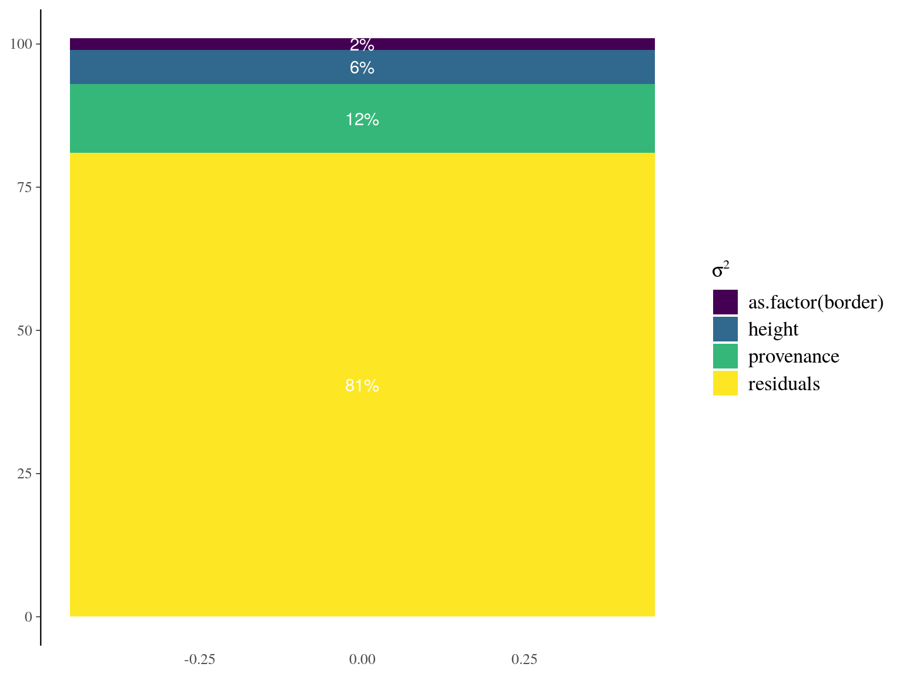

A Appendix 1: Anibarosa
A.1 Data
data <- read_tsv("data/anibarosa_oil_prod_2020.txt") %>%
dplyr::rename(height = `H`,
provenance = `Prov`,
border = `Bord`) %>%
mutate(border = as.numeric(border == "OUI"))g1 <- ggplot(data, aes(height, Mean)) +
geom_point() +
geom_errorbar(aes(ymin = Mean-SD, ymax = Mean+SD)) +
geom_smooth(method = "lm")
g2 <- reshape2::melt(data, c("ID", "Mean", "CV", "SD")) %>%
filter(variable != "height") %>%
ggplot(aes(value, Mean)) +
geom_boxplot() +
facet_wrap(~variable, scales = "free")
cowplot::plot_grid(g1, g2)Figure A.1: Anibarosa oil production in 2020 with height, provenance and border effect.
A.2 Model
lm(Mean ~ height + provenance + as.factor(border), data) %>%
anova() %>%
as.data.frame() %>%
rownames_to_column("parameter") %>%
mutate(TotSq = sum(`Sum Sq`)) %>%
mutate(pctNum = round(`Sum Sq` / TotSq * 100)) %>%
mutate(pctTxt = paste0(pctNum, "%")) %>%
mutate(parameter = ifelse(parameter == "Residuals", "residuals", parameter)) %>%
ggplot(aes(x = 0, fill = parameter)) +
geom_col(aes(y = pctNum)) +
geom_text(aes(y = pctNum, label = pctTxt), col = "white",
position = position_stack(vjust = .5)) +
theme(axis.title.x = element_blank(), axis.title.y = element_blank(),
axis.line.x = element_blank(),
axis.ticks.x = element_blank()) +
viridis::scale_fill_viridis(expression(sigma^2), discrete = T)

Figure A.2: Variance partitionning.